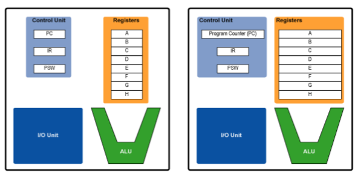

32-bit and 64-bit are used to refer to the way a CPU handles information. If a computer is 64bit than it can handle large amounts of RAM more effectively than a 32-bit computer.
A 32-bit system can only access 4GB of RAM in total and this is due to the fact that each byte of memory has to have an address and in a 32-bit operating system, an address is 32-bits long (i.e. 2^32 bytes = 4GB).
As seen in the image above a 64-bit CPU has much wider registers/a higher bit designation, this means that it can hold more data than a 32-bit register and in turn has a higher ceiling of addresses.